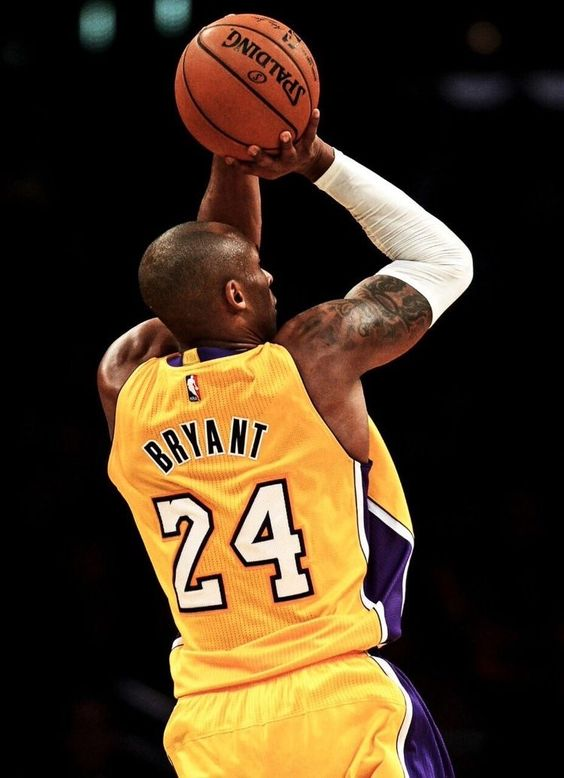
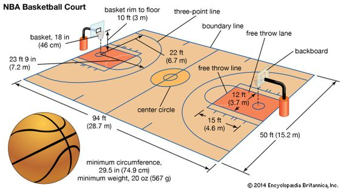
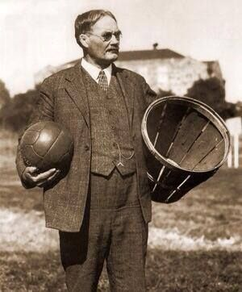
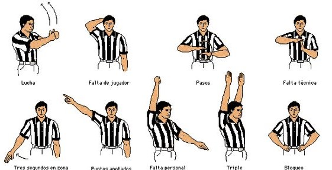
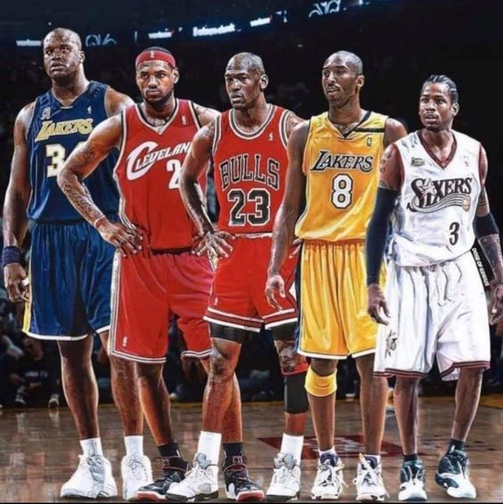
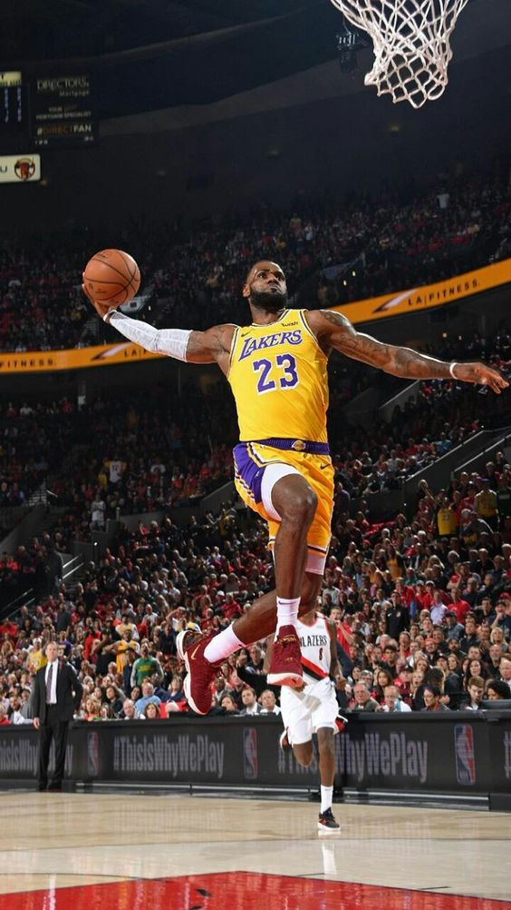
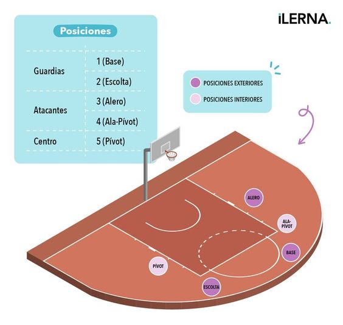

Conoce más sobre este emocionante deporte que ha capturado el interés de millones de personas en todo el mundo.
El baloncesto es un deporte de equipo que se juega en una cancha rectangular, donde dos equipos de cinco jugadores cada uno intentan anotar puntos lanzando el balón en el aro del equipo contrario. Los jugadores deben driblar el balón mientras avanzan y solo pueden sostenerlo mientras están en movimiento. Además de ser un juego físico, el baloncesto requiere agilidad, precisión y trabajo en equipo.
Este deporte no solo mejora la condición física, sino que también promueve habilidades sociales, como la cooperación y la comunicación. Con una rica historia que abarca más de un siglo, el baloncesto ha evolucionado en términos de tácticas y técnicas, convirtiéndose en un espectáculo emocionante tanto para los jugadores como para los aficionados.
En el baloncesto, cada jugada y estrategia cuenta, lo que hace que el juego sea dinámico y entretenido. A través de los años, el baloncesto ha influido en la cultura popular, conectando a personas de diferentes orígenes y fomentando un sentido de comunidad y unidad. Con cada partido, los jugadores y aficionados experimentan la emoción de un deporte que no solo se trata de ganar, sino de la pasión y el compromiso que implica.
Las medidas de una cancha de baloncesto son fundamentales para el desarrollo del juego y varían ligeramente entre las ligas. A continuación se presentan las dimensiones estándar:
Estas medidas son cruciales para establecer las reglas del juego y la dinámica de la competición, asegurando que todos los jugadores y equipos tengan las mismas condiciones en el campo.
El baloncesto fue inventado en 1891 por James Naismith, un profesor de educación física en Springfield, Massachusetts. Naismith buscaba crear un juego que se pudiera jugar en interiores durante el invierno, y así, ideó un deporte que combinara la habilidad física con el trabajo en equipo.
La primera versión del baloncesto se jugó con cestas de durazno como aros y un balón de fútbol. A medida que el juego ganó popularidad, se establecieron reglas formales y el deporte comenzó a expandirse a nivel nacional e internacional.
En 1936, el baloncesto se convirtió en un deporte olímpico durante los Juegos de Berlín. La fundación de la Asociación Nacional de Baloncesto (NBA) en 1946 marcó un punto de inflexión, llevando el baloncesto profesional a nuevas audiencias y elevando el nivel de competencia. Desde entonces, ha crecido exponencialmente, tanto en popularidad como en nivel de habilidad.
Las décadas de 1980 y 1990 vieron el surgimiento de estrellas como Larry Bird y Magic Johnson, quienes ayudaron a popularizar la liga. A finales de los años 90 y principios de 2000, la figura de Michael Jordan se convirtió en un fenómeno global, llevando al baloncesto a la cima del deporte mundial.
Hoy en día, el baloncesto es practicado en todo el mundo, con ligas profesionales en diferentes continentes y un seguimiento masivo, convirtiéndose en uno de los deportes más seguidos a nivel global.
El baloncesto tiene un conjunto de reglas que son esenciales para el juego. Estas incluyen:
Comprender estas reglas es fundamental para disfrutar del baloncesto y apreciar la estrategia y habilidades que se requieren para jugar a un nivel alto.
Practicar baloncesto ofrece numerosos beneficios, que incluyen:
Algunos de los jugadores más emblemáticos de la historia del baloncesto incluyen:
Estos jugadores, entre muchos otros, han influido en el desarrollo del baloncesto y han inspirado a innumerables jóvenes a practicar este deporte.
El baloncesto no solo es un deporte, sino que también forma parte de una rica cultura global. Abarca música, arte y moda, y ha influido en diversas generaciones a lo largo del tiempo.
Desde el estilo de vida de los jugadores de la NBA, que a menudo se refleja en la moda urbana, hasta la música rap y hip-hop que celebra el baloncesto, el deporte ha sido un pilar en la cultura popular. Además, eventos como el All-Star Game y las finales de la NBA son momentos destacados en el calendario deportivo que atraen la atención mundial.
En las comunidades, el baloncesto también ha sido un medio para la inclusión social, proporcionando un espacio seguro para la juventud, donde pueden aprender habilidades de vida y formar amistades. A través de ligas locales y programas escolares, el baloncesto se ha establecido como una herramienta de desarrollo personal y comunitario.
En el baloncesto, cada jugador tiene un rol específico, que se define según su posición en la cancha. Las cinco posiciones son:
Cada posición tiene sus responsabilidades y habilidades específicas, y el éxito de un equipo depende de cómo estos roles se integren y se complementen en el juego.
El baloncesto es un deporte apasionante que combina habilidad, estrategia y trabajo en equipo. A lo largo de los años, ha evolucionado y crecido en popularidad, convirtiéndose en una parte integral de la cultura global. La diversidad de habilidades que cada jugador aporta al equipo y la emoción del juego hacen que el baloncesto sea único.
Si bien el deporte tiene una rica historia y un fuerte impacto cultural, también sigue siendo una excelente manera de mantenerse activo, aprender valores y disfrutar de la camaradería. Si deseas conocer más sobre el baloncesto y su cultura, ¡aquí tienes un video explicativo! (aquí puedes insertar el enlace o código del video).
Aqui te dejo un video para q comprendas mejor el basquet.